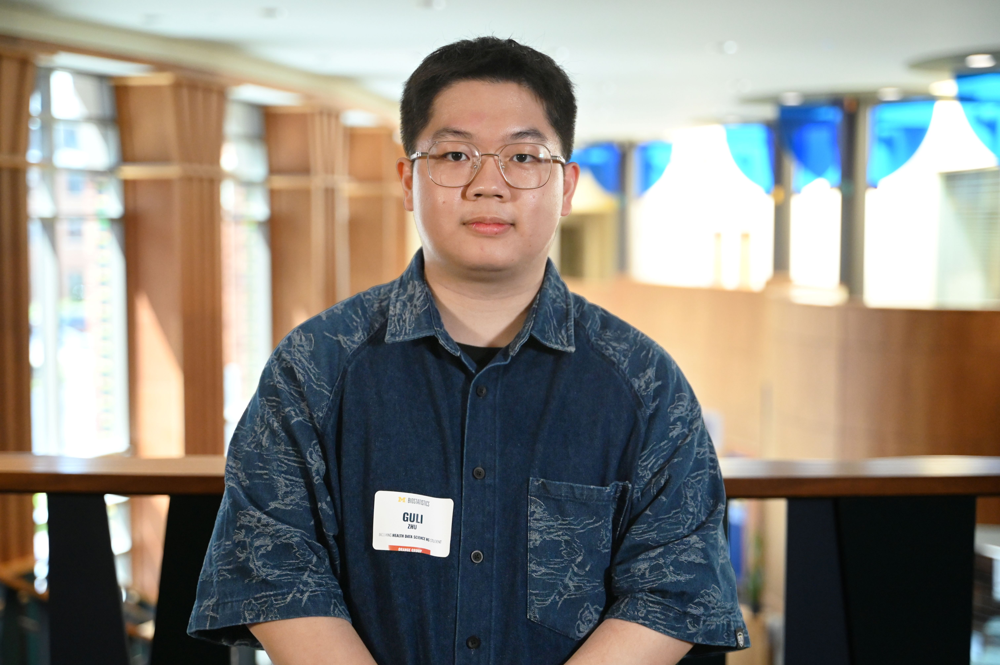

Guli Zhu
M.S. Student in Health Data Science, University of Michigan — Ann Arbor
I am a Master of Health Data Science student at the University of Michigan, Ann Arbor (2024–2026), and a graduate researcher in Prof. Liyue Shen's lab. I am broadly interested in AI for science and human-centered applications — including multimodal foundation models, trustworthy model adaptation, and evaluation — with a current concrete focus on medical AI and model editing for vision-language models (VLMs). My present research designs clinically grounded benchmarks for evaluating how reliably, locally, and generalizably knowledge-editing methods can correct post-deployment errors in medical VLMs.
我目前是密歇根大学安娜堡分校健康数据科学硕士项目的学生（2024–2026），并在 Liyue Shen 教授的实验室担任研究生研究员。我广泛关注科学智能（AI for Science）与以人为本的人工智能应用——包括多模态基础模型、可信赖的模型适配与评测方法——目前的具体研究重点是医疗人工智能（Medical AI）与面向视觉语言模型（VLMs）的模型编辑（Model Editing）。我目前的研究致力于设计具有临床意义的评测基准，用以衡量知识编辑方法在多大程度上能够可靠、局部、可泛化地纠正医疗 VLM 在部署后出现的错误。
Previously, I earned a B.S. in Data Science from Beijing Normal-Hong Kong Baptist University (BNBU) and interned as a machine learning engineer at ByteDance, working on multimodal recommendation systems. Beyond my current focus, I am also interested in medical visual question answering (Med-VQA), multimodal biomedical data science, and emerging directions such as vision-language-action (VLA) models and AI agents — areas I hope to explore further in future research.
此前，我在北京师范大学-香港浸会大学联合国际学院（BNBU）获得数据科学理学学士学位，并曾在字节跳动（ByteDance）担任机器学习实习工程师，从事多模态推荐系统相关工作。除当前的研究重点外，我也对医疗视觉问答（Med-VQA）、多模态生物医学数据科学，以及视觉-语言-动作（VLA）模型、AI 智能体（AI Agents）等新兴方向抱有兴趣，希望在未来的研究中进一步探索。
Research Interests
Multimodal Foundation Models
Vision-language models, multimodal reasoning, representation learning, and model adaptation.
AI for Science & Healthcare
Applying AI to biomedical, clinical, and scientific discovery problems — currently centered on medical AI and medical VLMs.
Trustworthy & Reliable AI
Evaluation, robustness, model editing, uncertainty, and safe deployment — exemplified by my work on M³Bench.
Human-Centered AI & AI Agents
AI systems that interact with humans, tools, and environments, including emerging interests in VLA and agentic systems.
News
- 2026.06Expected to complete the M.S. in Health Data Science at the University of Michigan.预计于密歇根大学完成健康数据科学硕士学位。
- 2026.05Our paper, "Evaluating and Understanding Model Editing for Medical Vision Language Models" (M³Bench), was accepted to ECCV 2026.论文《Evaluating and Understanding Model Editing for Medical Vision Language Models》（M³Bench）被 ECCV 2026 接收。
- 2025.11Co-authored work on muscle ultrasound radiomics for insulin resistance prediction accepted as an oral scientific presentation at RSNA 2025 (Chicago, IL).合著的肌肉超声影像组学预测胰岛素抵抗研究被 RSNA 2025（美国芝加哥）接收为口头学术报告。
- 2025.06Joined the BioMed-AI Lab at the University of Michigan as a graduate researcher (PI: Prof. Liyue Shen), working on model editing for medical multimodal LMs.加入密歇根大学 BioMed-AI Lab，担任研究生研究员（导师：Liyue Shen 教授），从事医疗多模态大模型的模型编辑研究。
- 2025.03Started the ultrasound–diabetes multimodal prediction project, combining clinical variables with skeletal-muscle ultrasound.启动超声-糖尿病多模态预测项目，结合临床变量与骨骼肌超声数据。
- 2025.01Began leading the DIAG subteam building a biomedical pathology RAG benchmark under U-M's Multidisciplinary Design Program.开始领导密歇根大学跨学科设计项目（MDP）下的 DIAG 子团队，构建生物医学病理学 RAG 评测基准。
- 2024.08Started the M.S. in Health Data Science at the University of Michigan, Ann Arbor.入学密歇根大学安娜堡分校，攻读健康数据科学硕士学位。
- 2024.03Machine Learning Intern at ByteDance, working on the TikTok product-endorsement multimodal recommendation project.在字节跳动担任机器学习实习生，从事 TikTok 商品种草多模态推荐项目。
Selected Publications
-

Evaluating and Understanding Model Editing for Medical Vision Language Models (M³Bench)
European Conference on Computer Vision (ECCV) 2026 — Accepted
-
Early Noninvasive Prediction of Insulin Resistance through Muscle Ultrasound Radiomics
Radiological Society of North America (RSNA 2025) — Oral Scientific Presentation, Accepted
-
A Comprehensive Study on Machine Learning Models Combining with Oversampling for Bronchopulmonary Dysplasia-Associated Pulmonary Hypertension in Very Preterm Infants
Respiratory Research, 2024
Selected Projects
Non-publication research & engineering projects. For M³Bench, see Publications.
非论文类的研究与工程项目。M³Bench 详情请见“论文成果”页面。
Ultrasound–Diabetes Multimodal Prediction
A unified pipeline linking clinical variables with skeletal-muscle ultrasound features (via U-Net/MedSAM segmentation and radiomics) for diabetes and insulin-resistance prediction.
CompletedBiomedical Pathology RAG Benchmark (DIAG)
A pathology-specific retrieval-augmented generation benchmark integrating BioLLM and DeepSeek models with modular retrievers and citation-evidence evaluation.
Completed